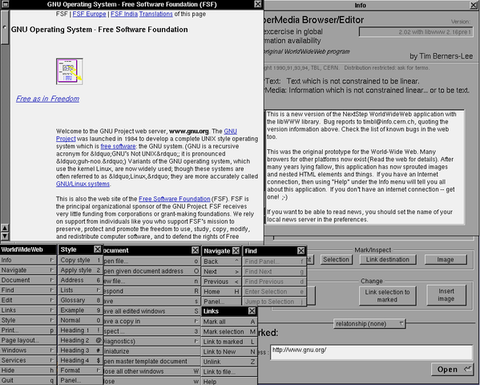
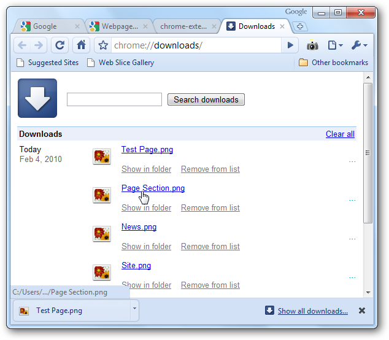

What is a web browser?
Kay Ashaolu
What is the core?


Features of a browser
- Network Access
- Interpreting the fetched data
- Possibly fetching and interpreting dependencies like images
- Rendering HTML with CSS rules
- Running scripts in the context of the web page
"Facebook.com" -> Web page
- Analyze address bar to determine protocol and server
- Connect to server, download data and all dependencies
- Analyze HTML, generate a Document Object Model (DOM)
"Facebook.com" -> Web page
- Apply CSS to the DOM
- Display the DOM
- Start executing scripting code and re-render the DOM as required
- Continue executing and interpreting user actions
Separate browser from websites?
- Composability!
- Improve the features around the website without upgrading the website
- Original browser did not have Forward or Back buttons
- Accessibility
Separate browser from websites?
- The trade-off is the layouts need to follow rules, designers must design with multiple audiences in mind
Browsers, Apps, Operating Systems
- Traditionally browsers were applications running in an OS like Windows
- Scripting enables browsers to run their own code
- Complex web pages (e.g. Google Docs, Slack) behave like an application
Browsers, Apps, Operating Systems
- Browsers could become an OS themselves (e.g. ChromeOS)
- Frameworks enable using web technologies for native applications (e.g. ChromeOS)
- The lines between browsers, apps, and operating systems are increasingly blurred
Browsers interpret data into information
Browsers interpret data as text
- HTML
- CSS
- JavaScript
Browsers interpret data as other media
- Images
- Music
- Video
HTML
- HyperText Markup Language
- HyperText is essentially text with links
- Provides the content of a page
CSS
- Cascading Style Sheet
- Modifies the look and feel of the web page
- Instructs the destination (browser) how to display the content (HTML)
JavaScript
- General programming language, but designed with HTML in mind
- Provides interactivity to web pages
- Can modify HTML and CSS after a web page has been loaded
- Some web applications are written only in JavaScript
Overview